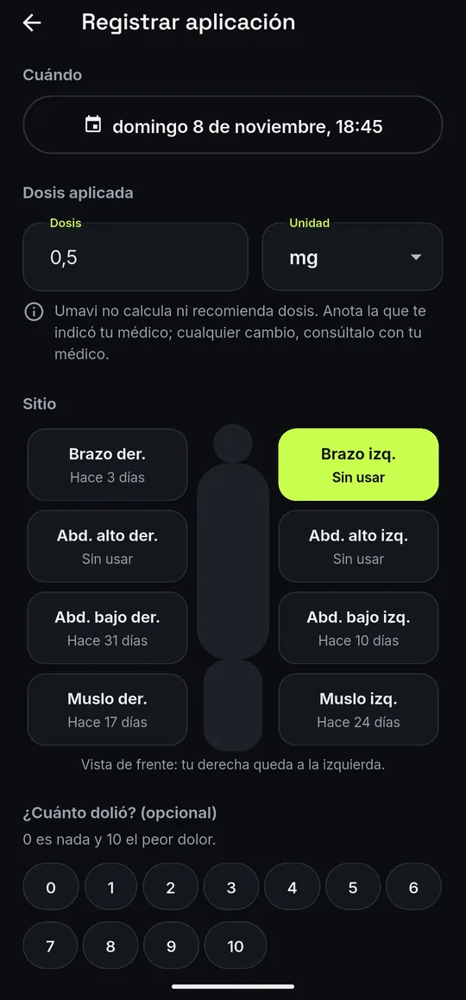

01
Anota cada aplicación en segundos
La dosis que te indicó tu médico, el sitio, el dolor y si hubo reacción en la zona. Umavi te sugiere el sitio que lleva más tiempo sin usarse.
- Mapa de 8 sitios con sus días de descanso
- Recordatorio a tu hora y la víspera, sin nombrar el medicamento
- «Ya me la apliqué» desde la notificación
